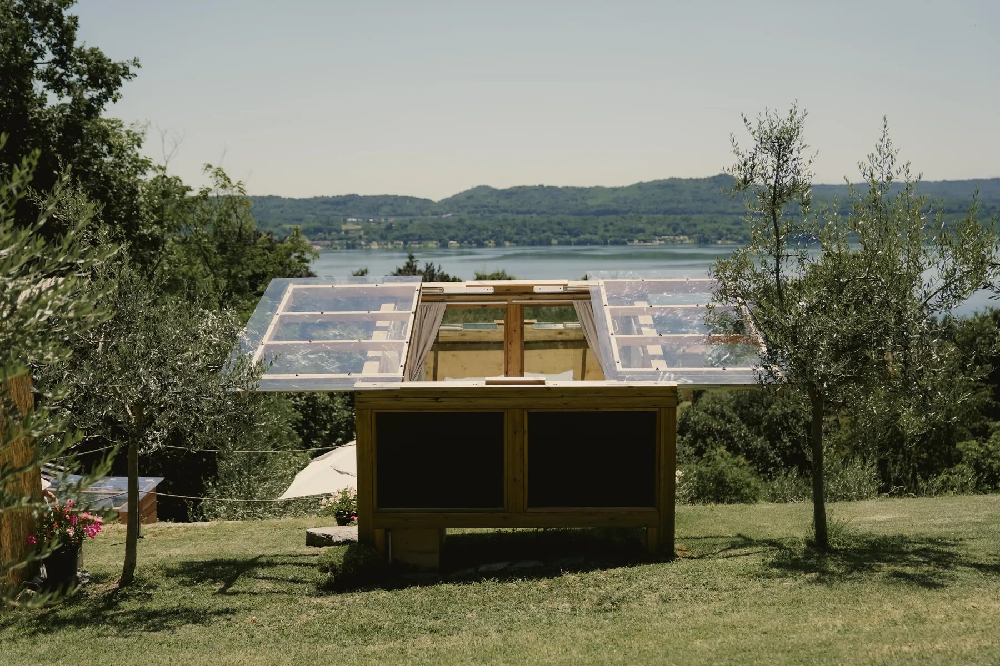

Nido 1, due cuori e un nido
Skyroom
La nostra finestra sul lago.
Una casetta in legno con ampie vetrate e il tetto trasparente che scorre: di giorno il lago, di notte il cielo sopra il letto. Fuori, il gazebo privato con tavolo, sdraio e frigo; il bagno con la doccia sotto il tetto trasparente. La vasca idromassaggio riscaldata è a cinque metri, vista lago, senza limiti di orario.
- Letto matrimoniale vista lago, piumone, coperta elettrica e vestaglie
- Gazebo privato con tavolo, sdraio, frigo e presa elettrica
- Bagno privato con doccia, accappatoi, asciugamani e phon
- Macchina del caffè, tisane, bicchieri da vino, giochi da tavola
- Colazione del Nido inclusa, per ogni dieta
0 €da lunedì a giovedì
0 €venerdì, sabato, domenica, festivi e agosto